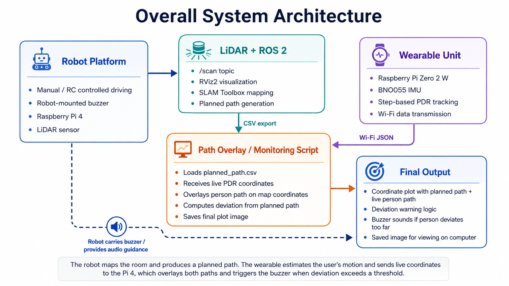
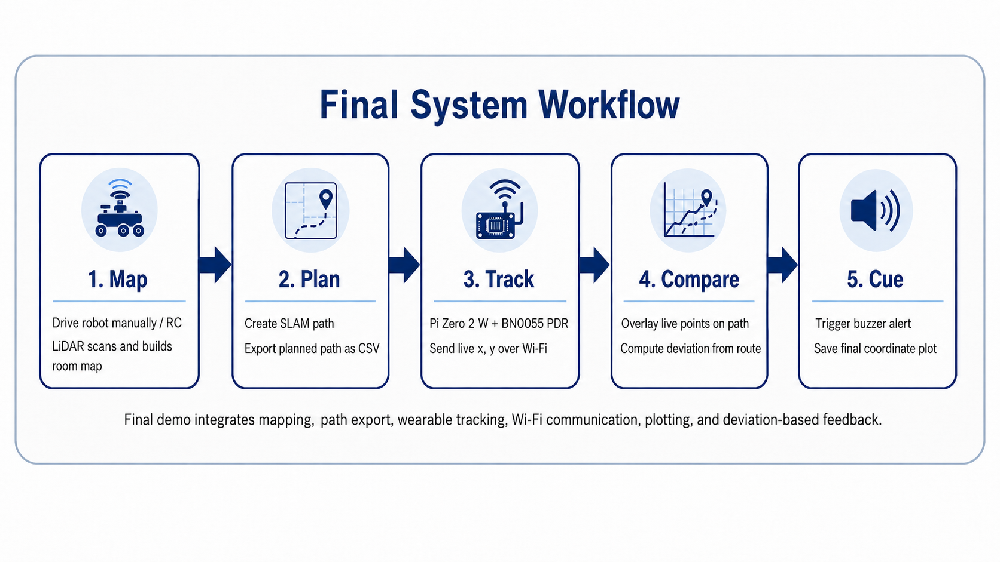
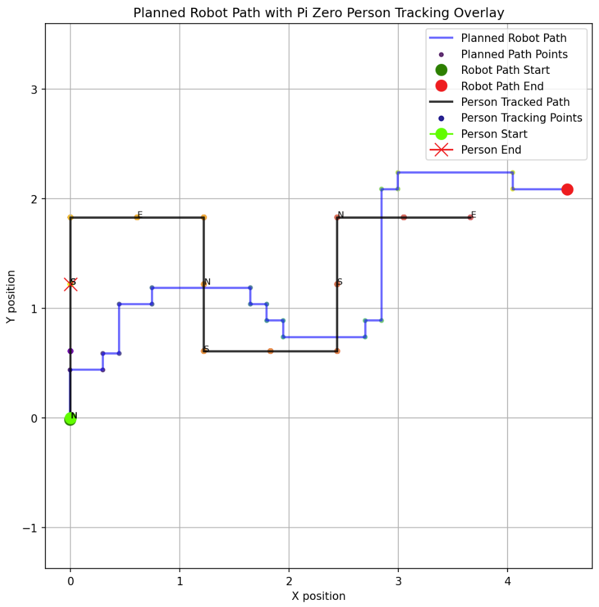
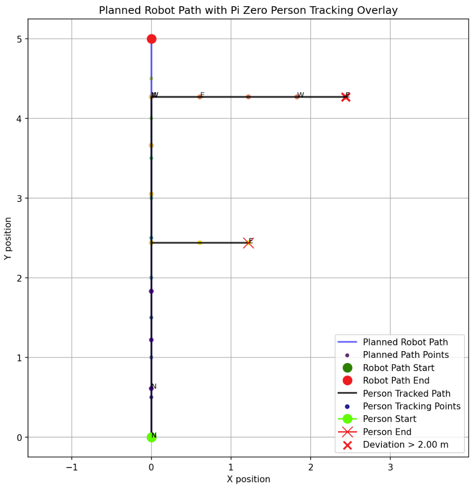
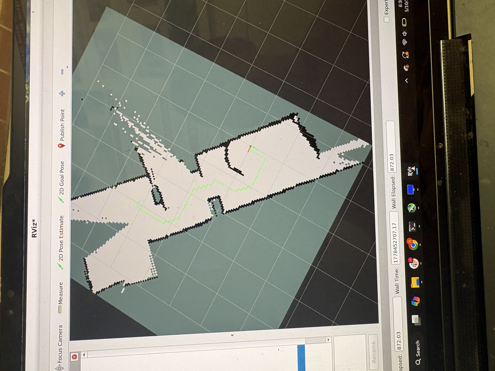
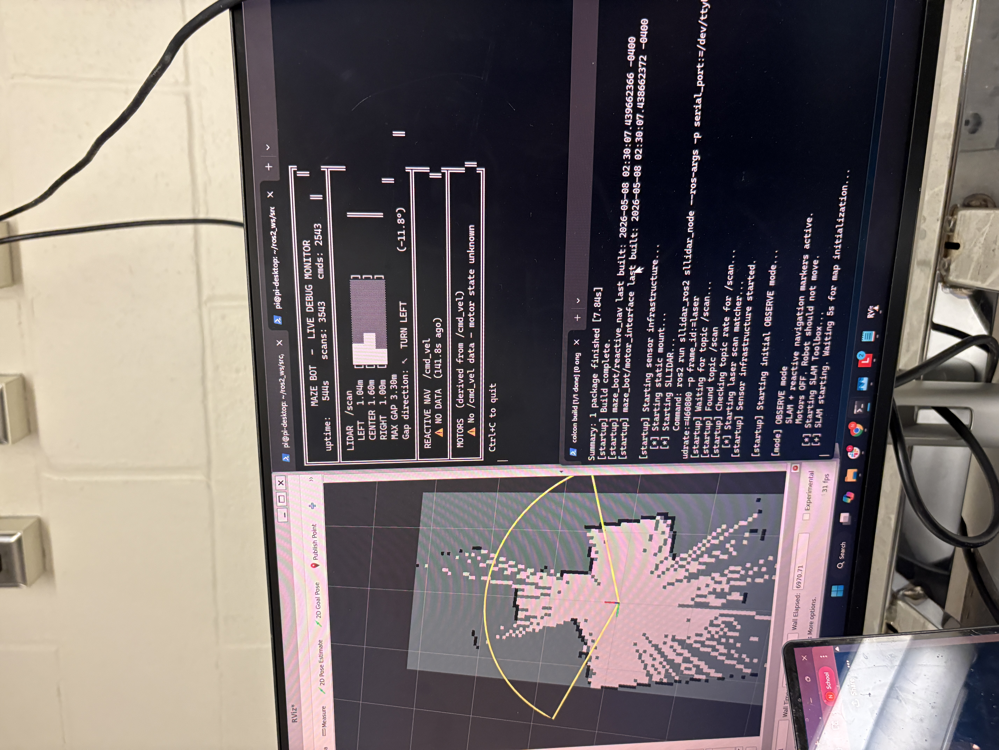
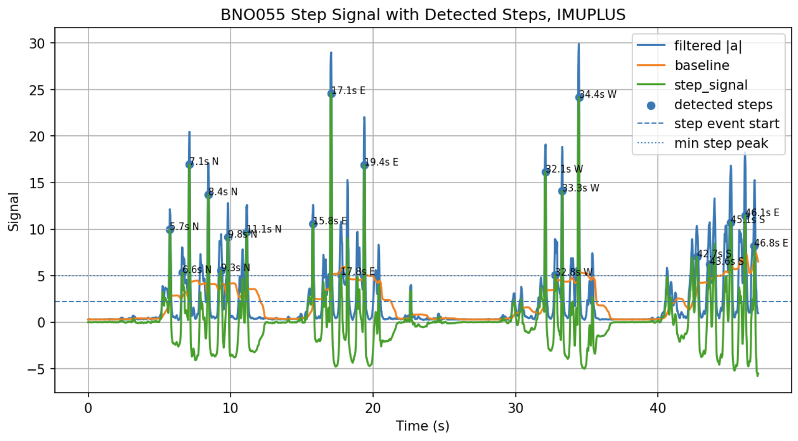
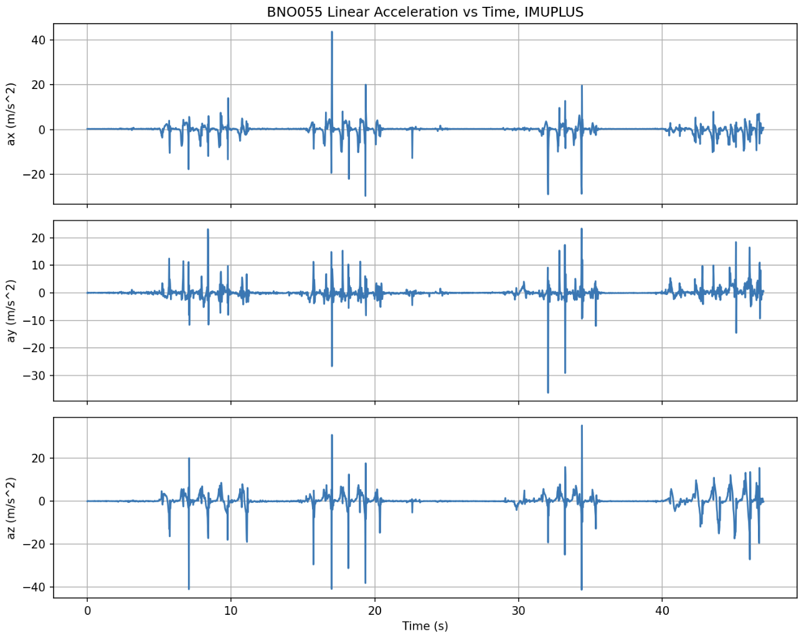
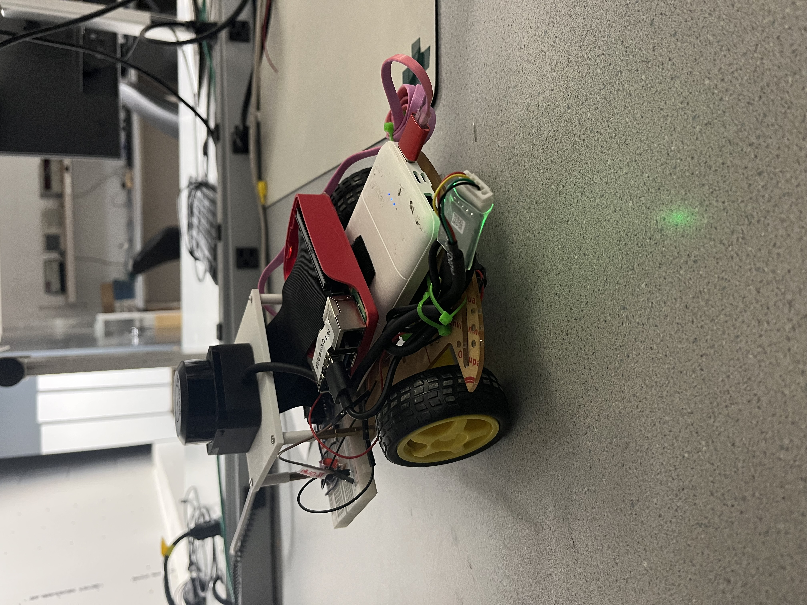

Motivation and Scope
Introduction
Indoor navigation is still difficult for people with visual impairments because GPS is unreliable indoors and many existing assistive navigation tools either require expensive infrastructure, rely on pre-installed beacons, or only provide local obstacle warnings. A cane or simple proximity sensor can help detect objects immediately in front of a user, but it does not provide a full route or a way to compare the user's movement to an intended path through a room. Our project explored a low-cost prototype that combines a mobile robot, LiDAR-based mapping, audio feedback, and wearable step tracking to test a different approach to indoor guidance.
The high-level idea is that a robot can first move through an environment and create a map using LiDAR and SLAM. From that map, a planned route can be generated and exported as a CSV file. A person then wears a small tracking unit built around a Raspberry Pi Zero 2 W and a BNO055 IMU. As the person walks, the wearable estimates their steps and direction using pedestrian dead reckoning, then sends live position estimates to the Raspberry Pi 4 over Wi-Fi. The Pi 4 overlays the user's estimated path on top of the planned route and checks whether the user is staying close to the intended path.
Our original goal was to make the robot fully autonomous, have it map the room, plan a route, and guide the user through the space. During development, we built and tested several autonomous navigation behaviors, including reactive navigation, gap following, and LiDAR target selection. However, autonomous movement was not reliable enough for a repeatable final demonstration, especially because small scan-frame errors, motor imbalance, and unstable target selection could cause the robot to veer toward obstacles. For the final system, we kept the robot movement manual or RC controlled so that mapping and demonstration were safe and repeatable. The core technical integration remained the same: LiDAR mapping, path export, wearable PDR, Wi-Fi communication, overlay plotting, and buzzer feedback.
The final version should be understood as a proof-of-concept for an assistive navigation pipeline rather than a finished assistive product. The system demonstrates that a low-cost robot and wearable can cooperate across two Raspberry Pis, exchange live tracking data, and produce a useful visualization of whether a person followed a planned route. The buzzer feedback adds a simple corrective signal if the estimated person path moves too far away from the planned path.

Figure 1. Overall system architecture. The robot maps and provides the audible cue, while the wearable subsystem tracks the person's motion and sends data to the Pi 4.
High Level Summary
Project Objective
Our objective was to demonstrate a low-cost assistive navigation prototype that links robot-based environmental sensing with wearable human motion tracking. The final system maps a room with a LiDAR-equipped robot, exports a planned route from the mapping software, receives live PDR coordinates from a Pi Zero wearable, and plots the planned path and person path on the same coordinate system. If the person deviates too far from the planned path, the buzzer gives an audible warning. This final version focuses on robust integration of sensing, communication, plotting, and feedback instead of fully autonomous robot movement.
The project required us to combine several independent subsystems into one workflow. On the robot side, we needed the Raspberry Pi 4 to run ROS 2, receive LiDAR data, visualize the scan, run SLAM Toolbox, and support manual or RC driving. On the wearable side, we needed the Raspberry Pi Zero 2 W to read IMU data, detect walking steps, estimate direction, update a position estimate, and serve that live state over Wi-Fi. The final integration step was to make the Pi 4 poll the Pi Zero, load the planned path CSV, compare the two paths, save the final overlay image, and command the buzzer when the estimated deviation was too large.
A major design priority was keeping the final demonstration reliable. Since the system included many moving parts, we separated the project into clear functions: mapping, path export, tracking, communication, comparison, and feedback. This made it possible to test each component individually before combining them. Even though the final robot movement was manual, the system still demonstrates the main concept of using a robot-generated path and a wearable tracker to monitor whether a person is following the intended route.
Map
Use the robot's LiDAR and ROS 2 mapping stack to build a 2D representation of the room. The robot is driven manually so that the mapping run is controlled and repeatable.
Track
Use a vertical BNO055 IMU on a Pi Zero wearable to estimate user steps, direction, and approximate position with a step-based PDR algorithm.
Warn
Compare the user's live path against the planned path and sound a buzzer if the estimated distance from the route exceeds a chosen threshold.
Demonstration
Project Video
The final project demonstration video is available through Google Drive at the link below. The video shows the main system workflow, including robot-based room mapping, path export, live PDR data reception, overlay plotting, and buzzer-based proximity warning. In the final demonstration, the robot is manually controlled while the sensing and tracking software runs in the background.
The video also shows how the project evolved into a reliable integration demo. Instead of depending on fully autonomous robot motion, we demonstrate the robot as a mapping and audio-beacon platform, while the wearable Pi Zero estimates the person's motion and sends live data back to the Pi 4. This allows the final system to show the key interaction between the robot-generated path and the person's estimated walking path.
Video 1. Final project demonstration showing manual robot mapping, path export, live PDR data reception, overlay plotting, and buzzer warning.
System Design
Design and Implementation
Final System Workflow

Figure 2. Final workflow used for the integrated demo.
The final design separates the system into two cooperating computers. The Raspberry Pi 4 is mounted on the robot and handles the robot-side tasks: LiDAR reading, ROS 2 startup, SLAM Toolbox mapping, path export, plotting, and buzzer feedback. The Raspberry Pi Zero 2 W is worn by the user and handles the wearable-side tasks: reading the BNO055 IMU, detecting steps, estimating direction, updating the user's relative position, and serving live tracking data over Wi-Fi.
This split was important because the Pi 4 had more processing power and could handle ROS 2, LiDAR visualization, and plotting. The Pi Zero was smaller and more appropriate as a wearable tracking unit. The two devices communicate over Wi-Fi using a simple HTTP server on the Pi Zero. The Pi 4 repeatedly polls the Pi Zero's position endpoint and receives JSON data containing the current x position, y position, step count, heading direction, moving status, and calibration values. This design made debugging easier because the Pi Zero could be tested independently by visiting its endpoint from the Pi 4 or a laptop.
Robot Mapping Subsystem
The robot uses a SLAMTEC/SLLIDAR sensor and ROS 2 nodes to publish scan data, visualize the scan in RViz2, and build a 2D map using SLAM Toolbox. We initially worked on autonomous navigation algorithms that selected open gaps from the LiDAR scan and drove the robot through them. These scripts published debug markers such as candidate points, target markers, FOV boundaries, and scan profiles so we could understand what the robot thought it was seeing.
For the final demo, robot movement is manual or RC controlled to make the mapping run repeatable and safe. This means the robot can still collect LiDAR data and build a map, but the movement commands are provided by the operator instead of the autonomous navigation stack. This decision allowed us to focus on the full integration between the mapping output, wearable tracking, Wi-Fi communication, and warning feedback.
- Pi 4 runs ROS 2 Jazzy.
- SLLIDAR node publishes scan data on
/scan. - RViz2 is used to inspect the scan, map, and robot frame alignment.
- SLAM Toolbox builds the room map.
- Planned path is exported to a CSV file for the overlay script.
Wearable Tracking Subsystem
The Pi Zero 2 W reads the BNO055 over I2C. At first, we attempted to estimate position by double integrating linear acceleration. This approach drifted severely, even when the IMU was stationary, because small acceleration noise and bias accumulate quickly after integration. To make the tracking more stable, we changed the algorithm to step-based pedestrian dead reckoning. Instead of integrating acceleration directly into position, the script detects steps, assigns each step a fixed length, and updates the position in the estimated walking direction.
A major issue was that the IMU was mounted vertically on the body, so the standard yaw value did not always represent the person's facing direction. We addressed this by computing heading from a selected body-forward sensor axis using the BNO055 quaternion. The heading is then converted into one of four cardinal directions: north, east, south, or west. This reduces noisy diagonal drift and makes the final plotted path easier to compare with the planned route.
- Fixed step length of 0.61 m, about 2 ft.
- Cardinal direction bins: N, E, S, W.
- Heading is computed from the body-forward axis for vertical mounting.
- Wi-Fi server exposes live
x,y,steps, anddirection. - Final CSV and debug plots are saved after each run.
Path Overlay and Deviation Warning
After the planned path is exported, the Pi 4 script loads the CSV file and polls the Pi Zero for live person coordinates. The CSV contains the planned route points, while the Pi Zero provides the estimated person position from PDR. Because the robot map and the PDR estimate may not begin in exactly the same coordinate frame, the Pi 4 script includes simple transformation settings for rotation, scaling, x offset, y offset, and optional axis flipping. These settings allow us to manually align the person path with the planned path for the final plot.
The deviation warning is computed by finding the nearest distance from the person's current point to the planned path. The planned path is treated as a sequence of line segments, and the script computes the shortest point-to-segment distance. If the distance is above the warning threshold, the Pi 4 sends a Wi-Fi command to the Pi Zero to turn the buzzer on. If the person returns close enough to the path, the Pi 4 sends another command to turn the buzzer off. We used separate on and off thresholds to prevent rapid flickering when the person is near the boundary.
This final feedback loop connects all parts of the project. The robot creates the map and path, the wearable estimates the user's motion, Wi-Fi moves the tracking data between devices, the Pi 4 compares planned and actual movement, and the buzzer provides an immediate warning when the person moves too far from the route.

Figure 3. Final plot showing our robot's planned path, and the overlay for the person's path.
Major Design Iterations
- Initial concept: autonomous LiDAR robot maps a room and a wearable module localizes the person directly on that map.
- Autonomous movement testing: we tested reactive navigation, LiDAR gap targeting, and wall-following style navigation. These approaches worked partially but were not consistent enough for the final demo.
- IMU development: double integration was tested first but drifted too quickly to be useful. We then switched to step-based PDR.
- PDR tuning: the BNO055 was mounted vertically, so the heading calculation was rewritten to use a body-forward sensor axis instead of assuming a flat IMU.
- Direction simplification: continuous heading estimates were noisy, so we switched to cardinal direction bins. This made the PDR output easier to interpret and compare with a planned path.
- Communication: Wi-Fi HTTP communication was selected over Bluetooth because it was easier to test between the Pi Zero and Pi 4 and did not require additional Bluetooth libraries.
- Final integration: robot driving was made manual for reliability, while LiDAR mapping, path export, wearable tracking, Wi-Fi communication, plotting, and buzzer feedback remained integrated.
Validation
Testing and Debugging
LiDAR and Mapping Tests
We tested whether the LiDAR published scan data, whether RViz2 displayed scans and map features correctly, and whether SLAM Toolbox could build a room-scale map. Early debugging focused heavily on whether the robot's coordinate frame matched the physical orientation of the LiDAR. Several times, the scan appeared flipped or the field of view pointed behind the robot instead of in front. We debugged this by changing static transform yaw, scan offsets, and RViz2 marker displays.
We also tested the ROS startup scripts to make sure the correct version of each file was being run. Since ROS 2 uses installed package files, source changes do not always take effect unless the package is rebuilt. To fix this, we added build steps and timestamp debug output to the startup script so we could see whether reactive_nav.py and motor_interface.py had actually been rebuilt.
- Verified
/scanpublishing from SLLIDAR. - Verified ROS 2 node startup through the run script.
- Debugged the
base_linktolasertransform. - Added build/debug timestamp checks to avoid running stale installed files.
- Used RViz2 markers to check FOV bounds, target direction, and scan alignment.
PDR and Wi-Fi Tests
The BNO055 tracking algorithm was tested by walking short straight-line paths, right-angle paths, and controlled paths where the expected motion was known. Each run produced multiple plots: acceleration versus time, step signal with detected peaks, heading debug plot, and XY trajectory. These plots were important because the final XY path alone did not explain why the tracker made a wrong turn. The heading plot showed whether the sensor thought the user was facing north, east, south, or west at each detected step.
Wi-Fi communication was tested by running the Pi Zero server and repeatedly polling its /position endpoint from the Pi 4. Once this worked, we added the buzzer command endpoint. The Pi 4 could then call /buzzer?state=on or /buzzer?state=off when the path deviation logic changed states. This confirmed that the two devices were not only exchanging tracking data, but also supporting feedback from the Pi 4 back to the wearable or buzzer unit.
- Added rolling average and baseline removal to reduce false step detections.
- Changed to cardinal direction locking when continuous heading was too noisy.
- Mounted IMU vertically and computed heading from a selected body-forward axis.
- Used HTTP JSON packets for live
x,y,steps_total, anddirection. - Added a buzzer endpoint that accepts on, off, and pulse commands.
Challenges and Resolutions
| Challenge | What happened | Resolution |
|---|---|---|
| Autonomous driving reliability | The robot sometimes chose unstable paths or the scan frame did not match the physical robot orientation. | For the final demo, movement was made manual/RC-controlled while preserving LiDAR mapping and data integration. |
| IMU drift | Double integration drifted badly even when the sensor was stationary. | Switched to step-based PDR with fixed step length and direction locking. |
| Heading instability | Continuous heading caused diagonal drift and direction flicker. | Quantized heading into N, E, S, W and later adjusted the bins so -45 to +45 degrees represented north. |
| Vertical IMU mount | Plain yaw was not always the person's facing direction. | Computed heading from the sensor axis mounted forward on the body. |
| File/build confusion | ROS sometimes ran older installed files. | Added build timestamp debug and hot-reload steps to the robot launcher. |
| Buzzer control | The Pi Zero received the buzzer command, but the sound depended on wiring and buzzer type. | Added support for GPIO 4, PWM mode for passive buzzers, active-high or active-low logic, and direct curl testing. |
Evaluation
Results
The final prototype met the core integration goals. We were able to run the robot mapping stack, export or use a planned path CSV, run PDR tracking on the Pi Zero, send live tracking data over Wi-Fi to the Pi 4, and save a combined plot of the planned path and person path. The buzzer feedback mechanism provides a simple way to alert the person if their tracked path deviates too far from the intended route.
The most successful result was the end-to-end data flow. The robot side produced a planned route, the wearable side produced live motion estimates, and the Pi 4 combined both into a single plot. The system also saved intermediate data, including PDR CSV files, acceleration plots, step detection plots, and heading debug plots. These files made it possible to analyze why a test succeeded or failed after the run finished.
The PDR was not perfectly accurate, but it was much more stable than raw double integration. The fixed step length and cardinal direction bins created a path that could be interpreted in room coordinates. Since the final route comparison only needs to know whether the person is reasonably close to the planned path, the PDR does not need centimeter-level accuracy to demonstrate the concept. However, over longer distances, drift and heading errors still accumulate.
- Completed: LiDAR mapping pipeline on the robot.
- Completed: manual/RC robot movement for reliable mapping and demonstration.
- Completed: BNO055-based PDR script with vertical mount support and cardinal heading locking.
- Completed: Wi-Fi data connection between Pi Zero wearable and Pi 4 plotting script.
- Completed: planned path and live person path overlay plot saved as an image.
- Completed: deviation-based buzzer command using Pi 4 to Pi Zero HTTP messages.
- Partially completed: autonomous robot pathfinding. The robot can calculate and visualize path information, but final movement was manually controlled for reliability.

Figure 4. Replace with final generated plot, RViz2 map screenshot, or demo photo.
Takeaways
Conclusions
The strongest part of the project was the integration across several subsystems. The robot side and person side communicate over Wi-Fi, and the final plot connects the path planned from mapping with the person's live motion estimate. The PDR subsystem also improved significantly over the project. Moving from double integration to step detection made the tracking much more usable, and the cardinal direction lock made the final path easier to interpret.
The project also showed how important coordinate frames are in robotics. Several issues were caused not by the high-level algorithm, but by mismatches between the physical robot orientation, LiDAR frame, IMU mounting direction, and plotted coordinate system. Debug plots and visualization tools were essential for identifying these problems. In particular, the heading debug plot helped us understand when the wearable thought the person was walking north, east, south, or west.
The main limitation is that the final robot movement is not fully autonomous. The LiDAR and ROS stack were useful for mapping, but stable autonomous driving required more tuning than the project timeline allowed. Another limitation is that PDR still accumulates error over time. The final system is therefore best viewed as a proof-of-concept for assistive guidance and monitoring rather than a finished navigation product.
Overall, the final prototype demonstrates a practical workflow for combining robot mapping and wearable tracking. It shows that a planned path from a robot map can be compared against live human movement data, and that the system can provide feedback when the person moves too far away from the intended route.
Next Steps
Future Work
- Autonomous navigation: improve gap selection, obstacle inflation, and motor calibration so the robot can follow the planned path without manual control.
- Better coordinate alignment: add a calibration step to align the Pi Zero PDR coordinate frame to the SLAM map frame. For example, the user could stand at the robot start point and walk in the planned north direction before tracking begins.
- Drift correction: periodically correct the wearable PDR estimate using map constraints, visual landmarks, UWB, BLE beacons, AprilTags, or known checkpoints.
- Live web dashboard: replace the saved image workflow with a live browser dashboard showing the map, planned path, person path, and buzzer state in real time.
- User feedback: test different buzzer patterns for warning, confirmation, and directional guidance. For example, a continuous buzz could mean off-path, while short pulses could indicate that the user is back on the route.
- Safety design: add a physical emergency stop, more conservative obstacle thresholds, and more reliable collision avoidance before any real user testing.
- Improved wearable mounting: design a stable enclosure for the Pi Zero and BNO055 so the IMU orientation does not shift while walking.
Figures and Media
Figures, Drawings, and Supporting Media
The figures below show intermediate outputs from the robot and wearable subsystems. These images were used throughout testing to debug both the robot mapping stack and the PDR tracking algorithm. The LiDAR figures show the mapping and scan visualization side of the project, while the IMU figures show how step detection and acceleration data were used to estimate user movement.

Figure 5. LiDAR map with planned path on SLAM.

Figure 6. Live LiDAR reading with robot FOV and direction vector.

Figure 7. Magnitude of acceleration vector with gain, used to detect when a step is taken.

Figure 8. X, Y, and Z acceleration vs. time while taking steps.
Autonomous Robot Testing
Media 1. Testing video of our autonomous robot algorithm before we switched the final demo to manual driving for reliability.
Open Autonomous Robot TestingRobot Debug Visuals
Media 2. Visuals from our robot debug program, including LiDAR scan interpretation and navigation markers.
Open Robot Debug VisualsBill of Materials
Parts List
The project was designed to use relatively low-cost and commonly available embedded systems hardware. The Raspberry Pi 4 was used for the robot because it could run ROS 2 and handle the LiDAR mapping stack. The Pi Zero 2 W was used for the wearable because it is smaller, has built-in Wi-Fi, and can still run the Python PDR server. Some parts were already available from lab resources, so the actual out-of-pocket cost was lower than the full replacement cost of the system.
| Part | Quantity | Approx. unit cost | Approx. total | Role |
|---|---|---|---|---|
| Raspberry Pi Zero 2 W | 1 | $15 | $15 | Wearable PDR tracking and Wi-Fi server |
| BNO055 IMU breakout | 1 | $20 | $20 | Wearable orientation and acceleration sensing |
| SLAMTEC/SLLIDAR sensor | 1 | $60 | $60 | 2D room mapping and obstacle sensing |
| Piezo buzzer | 1 | $2 | $2 | Audible warning or follow cue |
| Estimated Total | $97 | Actual cost depends on parts already available in lab. | ||
Sources
References
- ROS 2 Jazzy documentation.
- ROS 2 nodes and topics tutorial.
- SLAM Toolbox GitHub repository.
- SLAMTEC SLLIDAR ROS 2 package.
- Adafruit BNO055 Absolute Orientation Sensor Guide.
- Matplotlib documentation.
- Raspberry Pi documentation.
- ECE 5725 course materials, labs, and final project report guidelines.
- OpenAI ChatGPT, GPT-5.5 Thinking, used for debugging support, explanation drafts, and code organization assistance. Final design decisions and testing were completed by the project team.
Appendix
Code Appendix
Place the final source files in the code/ folder before submission. The table below lists the intended code files and their purpose. These files represent the main software components of the system, including robot startup, navigation experiments, wearable tracking, plotting, and buzzer testing.
The most important final files are the Pi Zero PDR server and the Pi 4 plotting script. The Pi Zero script reads the BNO055, detects steps, updates the estimated position, serves the live position over Wi-Fi, and accepts buzzer commands. The Pi 4 plotting script loads the planned path, polls the Pi Zero, computes path deviation, sends buzzer on/off commands, logs the received data, and saves the final overlay plot.
| File | Purpose |
|---|---|
| run_robot.py | Starts ROS 2, LiDAR, SLAM, motor interface, and robot control processes. Includes manual mode and build/debug helpers. |
| reactive_nav.py | Reactive navigation and RViz2 marker publishing. Include final version if autonomous/visual path logic is used. |
| motor_interface.py | Receives /cmd_vel and drives the motor driver pins. |
| pi_zero_pdr_wifi.py | Runs BNO055 PDR tracking, serves live coordinates over Wi-Fi to the Pi 4, and accepts buzzer commands. |
| pi4_plot_person_tracking.py | Loads planned path CSV, polls the Pi Zero, overlays person tracking, computes deviation, controls buzzer state, and saves final plot. |
| buzzer_test_gpio4.py | Tests buzzer on GPIO 4. |
| robot_debug.py | Displays live debugging information for LiDAR, velocity commands, and motor PWM estimates. |
Representative Code Snippet
# Pi Zero live tracking packet served to the Pi 4
live_state = {
"x": round(float(x), 4),
"y": round(float(y), 4),
"steps_total": int(steps_total),
"direction": str(accepted_heading_dir),
"moving": bool(moving),
"t": round(float(elapsed), 3),
}
# Pi 4 receives this packet and plots it against planned_path.csv
# If nearest distance to the planned path is above the threshold,
# the buzzer is activated using the Pi Zero /buzzer endpoint.Work Distribution
Team Contributions
Kaelem Bent, kab472
Led the wearable tracking and communication subsystem. Developed and tuned the BNO055 PDR algorithm, tested double integration and step detection approaches, added cardinal direction locking, configured Pi Zero Wi-Fi communication, added the live HTTP position server, and worked on integration with the final plotting and buzzer feedback workflow. Also worked on the final website, report content, and system-level integration framing.
Nate Haris, nh428
Led the LiDAR and mapping subsystem. Configured the LiDAR on the Raspberry Pi 4, worked with ROS 2, RViz2, scan matching, and SLAM Toolbox, debugged mapping performance and scan visualization, and supported robot-side integration with the planned path workflow. Also contributed to robot testing, hardware organization, and final demo preparation.

Figure 9. Our final robot.